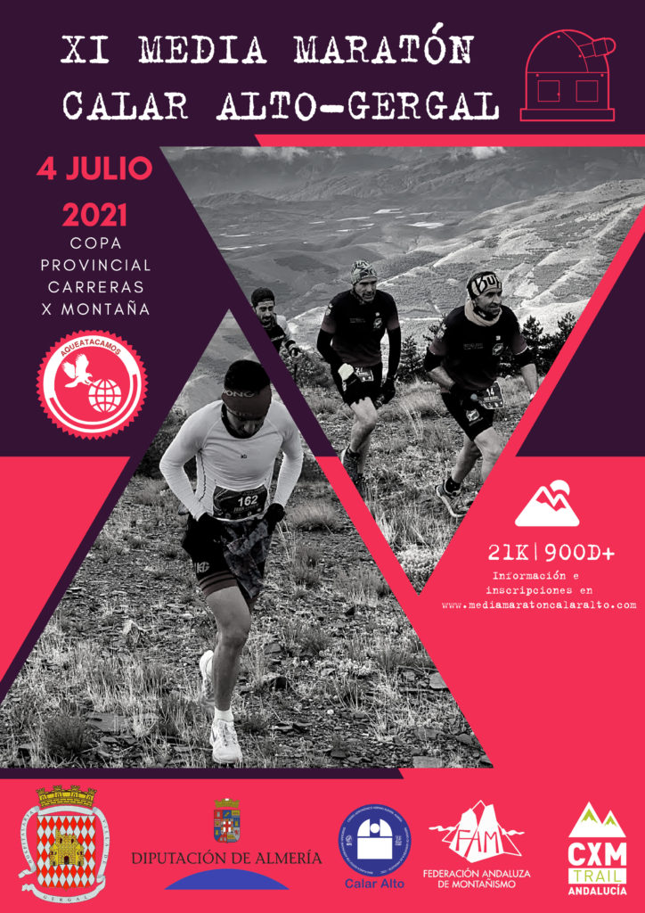

Con una temperatura prevista en salida de 12 grados, todo un lujo para este caluroso verano, y una media a lo largo de la prueba de entre 8 y 20 grados, se disputa el próximo 4 de Julio, la XI Media Maratón de Calar Alto, una competición que forma parte del calendario de la V Copa Provincial de Carreras por Montaña que impulsa el Área de Deportes de Diputación, en colaboración con los ayuntamientos sede de cada carrera.
La gran peculiaridad de la Media Maratón de Calar Alto, Gérgal, reside en que se trata de la prueba de esta distancia, 21 km, que transcurre a mayor altura de las que se celebran en la geografía nacional, concretamente a 2.160 metros en su punto más elevado. Contempla dos modalidades, senderista (no competitiva) y runner, ambas con salida y meta en el Observatorio Astronómico de Calar Alto.
Otra singularidad radica en la belleza del entorno y las espectaculares vistas que se aprecian a lo largo del recorrido, una oportunidad única para los aficionados a este deporte. Se disfrutarán de vistas inmejorables de Sierra Nevada, el mar Mediterráneo, el macizo de La Sagra, Sierra Alhamilla, el desierto de Tabernas…
| Edad | Precios |
|---|---|
| Menos de 16 años | 5 € |
| Entre 17 y 25 años | 10 € |
| Entre 26 y 55 años | 12 € |
| Más de 55 años | Gratis |